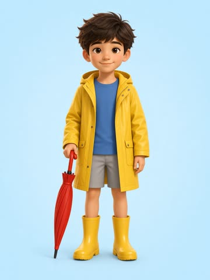
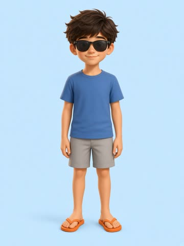
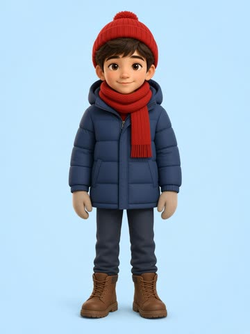

raincoat & umbrella
T-shirt & sunglasses
coat, scarf & hatTeacher: press play, ask "What's the weather like?", then let the children choose.

raincoat & umbrella
T-shirt & sunglasses
coat, scarf & hatMax is ready for every weather.